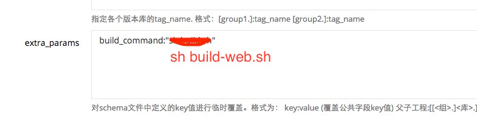

构建发布
React Web的构建也是整合到Qunar React Native的构建工具内，只需要不同的参数、同样的命令，就可以合并、打包代码。构建工具默认情况下会同时输出ios、android和web端产物。
构建
sh build-web.sh target[dev|beta|prod] enableSourceMap[true|false]
发布
1.发布touch
- 确保你的项目是在fe namespace下
- 在schema/fe下创建项目的schema配置 创建
- 新建job【也可以直接复制delivery_react_web_demo_dev、delivery_react_web_demo】 新建

- 在extra_params添加
build_command:"sh build-web.sh" - 关联后端项目，即可发布到dev、beta、prod环境
2.发布qp包
参见离线包发布流程